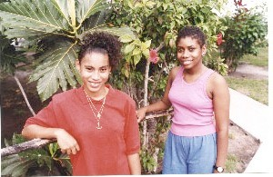

© Copyright 2019 John Hessburg, U.S. Dive Travel Network. All rights reserved.
Denis Midence, talented manager of DUNBAR VILLA & senior diving guide, now has a skipper's license, too.
A young man of many talents, Denis is prepping to take families, clubs & corporate teams on private yacht
charters of Guanaja & neighbor isles. All 7 photos of "C-Angel" interior: © Copyright 2019, U.S. Dive Travel.
Behind Denis, at top right, is longtime USDT partner Doug Poulin, who owns a large NorthAm travel website.

Denis's strong cheerful dive-boat assistant, Cheli, next to USDT's Jack Hessburg. (Yep, Jack's 6-ft-6.)
There's more than Guanaja dive packages to entertain
visitors here. Among the many rural charms of Guanaja island, there are miles of
beautiful -- & rugged -- hiking trails within close access of the resort.
There's a fun, moderately strenuous 3rd-class scramble for a couple hundred
meters up a rocky buttress to gain the mountain ridge behind Nautilus Dive
Resort. Then you can hike & bushwhack for miles in near wilderness, with
thousands of towering Norfolk pines everywhere, & lush jungle below on the
mountain's flanks. No worries about evil critters here, just bring some bug
juice. Also bring good Vibram-soled hiking boots & 2 or 3 water
bottles.
For apres-diving nightlife, there is a small sister
resort just down the beach on Guanaja, where you can find cold beer & good
conversations. You can ask the staff to arrange, for small extra fees, a private
picnic on a pristine deserted cay near Guanaja island, where you can laze or
romance the day away, far from any human contact if you wish. Guanaja also
offers outstanding opportunities for deep-sea fishing. Furthermore, some of the
world's best topwater bone-fishing is right near the Dunbar Villa / Nautilus
Dive Resort shoreline. (The world-record bonefish was caught off Guanaja, not
far from Nautilus, just a few years ago.) 's owner was so excited
he phoned us just to report this amazing catch.
During the last decade we have
mastered the art of finding the lowest USA-SAP air ticket prices, plus the best commuter airfares, & perfect
connecting flights, from San Pedro Sula out to Guanaja island. This is an easy
hour's flight, maybe a bit more if you stop in La Ceiba on the North Coast. The
vistas of the unspoiled Honduras North Coast are primo.
The motto at Dunbar Villa is,
"Come as a guest & leave as a friend."
A beautiful half-day trek is exploring the Guanaja
Waterfall, a refreshing
respite from summer heat.
Photo courtesy of James L. Wilson of CA.
Typical guest room at the original mansion, .
This isle of Guanaja is so sweet of spirit, so free of the
bustle & greed that have sullied many Caribbean islands, that you may be
changed from the inside out once you visit Guanaja. That's what happened to us
one Spring. That's why we feel a little twinge of happy envy each time we book
another couple or family into Nautilus Dive Resort. The resort leaves a subtle
& healthful mark on your heart. Guanaja is not a place people forget easily,
we assure you.
The historic island of Guanaja sits about 40 miles off
the northern coast of Honduras, maybe 20 miles East of Roatan. Nautilus rooms
give you sweeping views of an ante-bellum plantation estate, perched 100 meters
up a gradual hill above the beach. The broad upstairs balcony overlooks miles of
the blue Caribbean. This comfortable & romantic old mansion has only 6 guest
rooms -- never a tourist crowd -- & was built by descendants of British
buccaneers. No kidding, matey.
First spotted by Columbus in 1502, Guanaja was a haven
for brawling pirates of the 17th Century, including the infamous Blackbeard,
Barbarosa & Sir Henry Morgan -- you know, those bearded, growling miscreants
that Errol Flynn used to swashbuckle over the railing into Davey Jones' Locker.
Jesting aside, those pirates were painfully real; they lived large on Guanaja;
they plundered the British & Spanish armadas off & on for about 200
years, amassing vast fortunes. And they left many sons & daughters among the
Mayan-African-mixed people of the Bay Islands. Some of their descendants are
still living in Guanaja's little village cay called Bonacca Town. They are
beautiful, generous people with sable-cinnamon skin, proper British surnames
& a singsong "Be Hoppy Mon" accent that will lilt you back to a time in the
Caribbean when the sextant & the saber were haute technology.
Guanaja's terrain is fresh & unspoiled, as exotic as
Tahiti with none of the dross, nor the sullen energies of Papeete. You'll love
Guanaja for its pristine little cays, coves, mountains & fringing reefs. Yet
Guanaja has none of the bumbling Bermuda-shorted hordes that invaded &
infected so many cultures throughout the Caribbean. There are no roads, no
industrial centers, no high-rises & no pollution on this 7-by-3-mile island.
The turquoise waters, tall fragrant pines & the trail-rich hillsides are a
hale hiker's heaven. This is serene, clean Caribbean life like it was more than
half a century ago. It is a wonder such a place still survives, hard on the
dawning of the 21st Century. Thank God that Guanaja island is too mountainous to
build a long landing strip that handles jumbo jets. That fact alone may be why
Guanaja was spared the cultural ransacking of islands like Hispaniola.

Clean beach of Nautilus Dive Resort,
about 600 feet long & downhill from the inn.
Ultra-clear waters off Guanaja isle are a
pristine playground for bone-fishing, too.

The warm hospitality of Guanaja's
Garifuna people will rejuvenate you.
All 3 pics in this block are
© Copyright Gerd Ottehenning.
Scuba divers & snorkelers will be delighted to find
brilliant, unspoiled reefs surrounding nearly all of Guanaja, an ancient island
near the Southern Belize Barrier Reef. Here some of the Western Caribbean's most
colorful marine life is thriving, including magnificent hard corals &
sponges. We've seen tube sponges as tall as a man, & barrel sponges so huge
a woman could swim down inside one -- except we don't touch one living thing on
these virgin reefs. We urge our clients to look at, but never fondle, these
delicate sea creatures. They are candy for the eyes only. So look lots, but
don't touch, mon. Muchas gracias, amigos del mar.
The clear Guanaja waters are safe & fun for
snorkelers & scuba divers all year-round. Ocean temps will likely be 80-84
degrees F at the surface. The climate is delightful, except in deepest summer,
when the sun is high & hot, & humidity is also intense. Expect scuba
"viz" from 80-120 feet! Imagine -- a bad viz day being 80 feet, as you lollygag
in lapping currents & sea water that's bathtub warm, while a 200-lb grouper
as mellow as a manatee drifts past you, friendly & unflappable; & large
green morays sway from their cubbyholes, gaping like curious kids.
One afternoon, following lunch after your morning dives,
you can take a water taxi over to the picturesque old-world village of Bonacca.
This bizarre little hamlet, less than 100 acres, is home to about 3,000 friendly
Caribbean people. These good folks live in 2- & 3-tiered stilt homes, piled
atop each other like shoe boxes, flanked by boardwalks & concrete catwalks
along narrow Venice-like canals that weave through the island. Incessant ocean
tides sweep through the village day & night. Affable Bonacca Town seems a
page ripped from some 19th Century schoolbook, yet it even has its own churches,
hotels, bars, discos, police force & snack kiosks, all hovering over the big
blue Caribbean! Bring a lot of color film, because Bonacca will get you snappin'
like Art Wolfe on high-test cappuccino. Another fun side tour is to
hike the big peak just behind Nautilus Dive Resort, where after several hours of
excellent cardio-pump, you'll be treated to one of the best long-distance vistas
in the Bay Islands of Honduras. If you decide to hike up into the hills, we
recommend you start very early (by 5 a.m.) to avoid the searing midday sun. Sit
out the morning dives for sure, before your mountain trek, to increase your
safety decompression margin. Bring 3 or 4 quarts of water & some snacks,
plus your camera & plenty of film. Always stay well hydrated in the tropics
when you're scuba diving. This is vital.
Another day, your divemaster guide will speedboat you
through the island's canal, & around Guanaja to the Northwest side, out to a
scenic trek up to the island's main waterfalls. Some geologists believe that
Guanaja, more than 40 miles north of the Honduran coast, is blessed with a
strange & almost baptismal link to the mainland. The first time we heard
this story we were astonished by the weird science of it all.
The massive tropical rainfalls that inundate the Honduras
North Coast & eastern Mosquitia regions have created vast underground lakes
of fresh water, whose hydraulic pressures over the eons have pushed through
solid rock strata under the ocean floor -- drilling 40 miles through this ocean
substratum -- reaching all the way to Guanaja's hillsides! Here, the theory
goes, that abundant crystal-clear water gushes freely from rock springs much of
the year, pushed by unimaginable forces all the way from the mainland, then up
into a mountain's inner depths -- all deeply underground. Even Bill Nye the
Science Guy might be amazed at this far-out factoid. But we have the waterfall
photos to prove it !
The wealth of water, plus acres of tall timbers back in
the hills -- perfect girth for ship mast repairs -- were main reasons the old
pirates favored Guanaja & the Bay Islands. You can still hear some of their
briny 18th Century lingo in the sing-song slang of the local people. Guanaja is
an island where not much has changed in half a century.
Except the tourists. Nearly every person who visits
Guanaja, & is blessed to experience the quiet excellence of ,
comes away with a refreshed perspective on how good it is to be alive, to be
young enough to taste the ocean, embrace the cool blue currents & kiss the
sky, all in a single day; young enough to lay down after a hard day's play in
the throe of the Bay Islands' sea breezes, that lull you away in a
minute.
Then you sleep so deeply that you dream like a child
dreams, of deep blues & vivid greens, of flashing orange reef fish &
windy ridgeline sanctuaries, of safe harbors for slow boats & tired souls,
where stress & anxiety are somebody else's fractured reality, which you can
laugh at from afar & discard. When you awaken, hummingbirds flitting outside
your window, a mango tree rustling, a ripe fruit plopping to wet earth, the
smell of breakfast bread baking in the kitchen -- your dream has not gone away.
You're still in it, mon. You're on Guanaja & the dream is alive. You are
living it today. Really living. How long can you afford to stay away from
Guanaja island?

Both aerial photos of Guanaja Island provided courtesy of our friend, John B. Pohle.

Olde Bonacca Towne in foreground; DUNBAR ROCK rules tranquil Sandy Bay in background.
Bonacca is located about a mile west of DUNBAR VILLA on Guanaja's protected South Shore.

A plump healthy brain coral juts from a bommy at "Short Stop," a dive site not far from
Guanaja's sheltered southern shore. Photo by Jack Hessburg, U.S. Dive Travel Network.

John Hessburg, Doug Poulin & the whole U.S. DIVE TRAVEL team
invite you to come on down to VILLA on DUNBAR ROCK!
FOR MORE INFORMATION or RESERVATIONS:
Please feel free to contact:
John Hessburg, General Manager
Susan
Hessburg, Operations Manager
U.S. DIVE TRAVEL Network
PMB 307 -- Suite
# 116
15050 Cedar Ave. S.
St. Paul, MN, USA 55124-7047
Voice Mail:
952-953-4124
E-mail: divetrip@bitstream.net
Website: www.usdivetravel.com
******************************************************
IMPORTANT REMINDER about PRICES & TARIFFS:
All dive package prices listed here are subject to possible change in this
steadily evolving travel market. Lodging, side tour & diving prices are
traditionally stable, while air prices can fluctuate daily. Until air tickets
are issued, all airlines reserve the right to change airfares without notice --
an industry standard per FAA rules. We at U.S. Dive Travel will price-protect
you to the utmost of our professional ability; & that has been our pledge
for more than 24 years now. Remember please, the federal
government has deregulated all U.S.-based airlines, so only they control their
pricing -- not any travel professionals. Early is good when seeking the best air
ticket rates.
Unless specifically noted, these above scuba diving packages are prices for
only the land-based portion of the resort, in all cases reflecting
double-occupancy rooms. International air tickets &
commuter "island-hopper" seats are always extra above these land costs. Nominal
service fees are also extra for air tickets & the vessel + side tour
components. The baseline tariffs for all clients start at $55 per person for the
land portion + $35 pp for the air tickets. Late-booking clients may receive
slightly higher tariffs on the lodging + diving at many of our dive resorts.
Solo clients will always pay a single supplement to secure a private room --
normally USD $377 more than the standard double-occupancy rate at Dunbar Villa
Remember, all tropical vacation clients to Guanaja island will be charged about USD $15 for a
"reef preservation fee", assessed by municipal officials right as you deplane at NJA Airport. Also, you will be
asked by Honduran emigration officials at SAP, upon departing the airport on your final day,
to pay a nominal government departure tax, usually between USD $35 - $40 per
client. USDT cannot collect this tax beforehand, so you simply pay it down
there, in your host country. Be sure to stash away a little cash for this final
moment at the airport, so you'll get your exit visa stamped quickly with no
fuss; & away you go. Best of luck with your dive travel plans. We hope your
scuba diving vacation is a safe & satisfying adventure. Blessings & best
wishes with ALL your Honduras dive vacations.
Best fishes too!
>////*> <*\\\\<
John Hessburg & Susan Hessburg, Mgrs.
U.S. Dive Travel Network.
© Copyright 1995 - 2019 / U.S. Dive Travel Network.
|